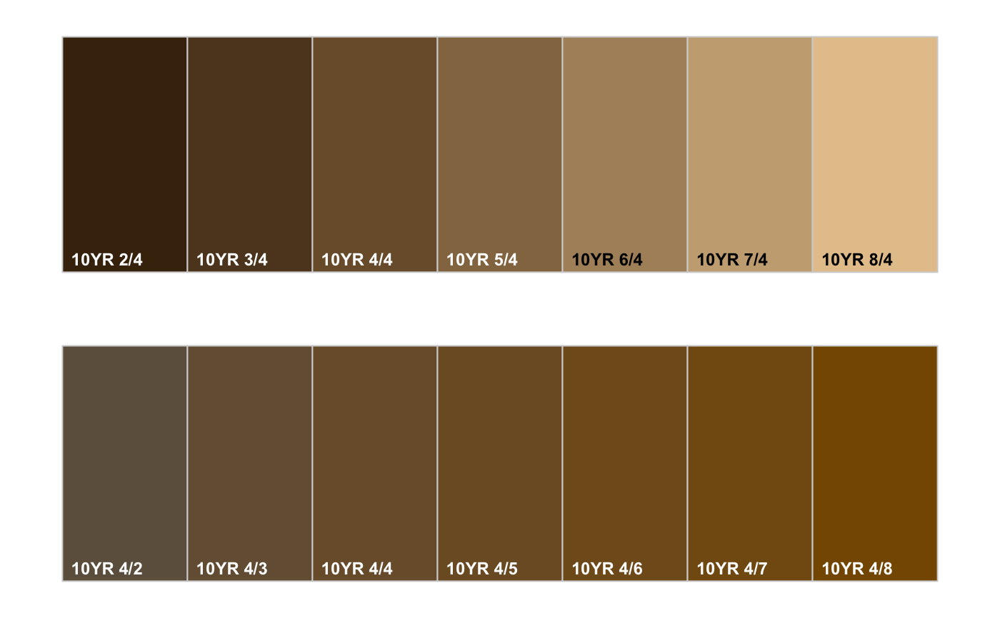

A very simple function for generating labeled swatches of soil colors. Largely based on colorspace::swatchplot.
soilPalette(
colors,
lab = colors,
lab.cex = 0.75,
dynamic.labels = TRUE,
x.inset = 0.01,
y.inset = 0.01,
...
)vector of hex colors (e.g. #A66E46FF)
vector of labels
character scaling for labels
logical, adjust label colors for maximum contrast via invertLabelColor
horizontal adjustment for labels
vertical adjustment for labels
further arguments to colorspace::swatchplot
The result is a simple figure on the active plotting device.
# maybe useful for teaching about soil color
par(mfrow=c(2,1), mar=c(1,1,1,1))
# demonstrate range of Munsell value
m <- sprintf('10YR %s/4', 2:8)
# convert to hex representation
cols <- parseMunsell(m)
# plot
soilPalette(cols, m)
# demonstrate range of Munsell chroma
m <- sprintf('10YR 4/%s', 2:8)
# convert to hex representation
cols <- parseMunsell(m)
# plot
soilPalette(cols, m)
